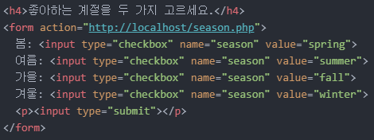
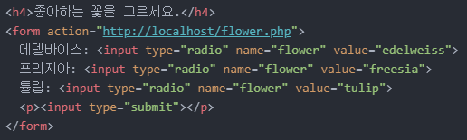
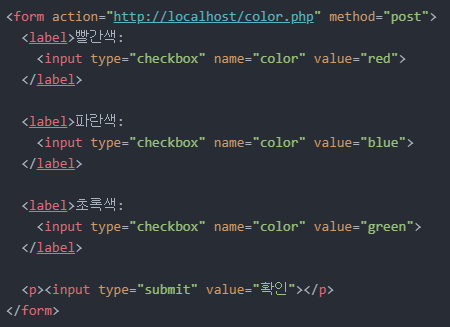

> MEMO: 대학교 개강..ㅠ 앞으로 바쁘겠지만 30분이라도 좋으니까 코딩하는 습관은 절대로 잃지 말자..
1. 오늘의 목표
- 'form' 태그와 같이 쓰이는 태그들과 친해지기
2. 목표 실천하기
어제에 이어서 오늘도 'form' 태그와 더 친해져보겠습니다.
그럼 바로 Start!
체크박스 만들기
체크박스를 만들기 위해선 'input' 태그 내부의 'type' 속성을 'checkbox'로 지정해주면 됩니다.
한 번 클릭해보세요.
코드는 아래와 같습니다.
그럼 'form' 태그에 적용시켜보겠습니다.
좋아하는 계절을 두 가지 고르세요.
어제 배웠던 'value' 속성도 같이 적용시켰습니다.
아래는 해당 코드입니다.

이쯤에서 'value' 속성에 대해 간단하게 정리해보려고 합니다.
지금까지 'value' 속성의 두 가지 용도에 대해 배웠습니다.
1. 입력 상자에 특정 문구를 입력해두기 ex) 'text' 속성
2. 서버에 데이터를 전송할 때 컴퓨터가 알기 쉬운 언어로 번역하기 ex) 'option' 태그
저는 1번과 같이 페이지를 열었을 때 특정 체크박스가 미리 체크되어 있는 상태로 만들고 싶습니다.
예를 들어, 각종 테스트를 할 때 '보통이다'라는 문구가 선택되어 있는 것처럼요.
그런데 'value' 속성을 사용하고자 하니.. 이미 2번과 같은 용도로 쓰인 상태입니다.
그 말은 즉, 다른 속성을 이용해야 한다는 의미이기도 합니다.
이러한 역할을 하는 속성이 바로 'checked' 속성입니다.
그럼 바로 적용해보겠습니다.
좋아하는 계절을 두 가지 고르세요.
가을과 겨울이 선택되어 있는 것을 알 수 있습니다.
아래는 해당 코드입니다.
라디오 버튼 만들기
라디오 버튼을 만드는 방법은 체크박스와 비슷합니다.
'input' 태그 내부의 'type' 속성을 'radio'로 지정하면 됩니다.
이번에는 바로 'form' 태그에 적용시켜보겠습니다.
좋아하는 꽃을 고르세요.
아래는 해당 코드입니다.

보시다시피, 라디오 버튼은 기본적으로 중복 선택이 불가합니다.
같은 'name' 속성으로 묶여있기 때문입니다.
달리 말해, 각각 다른 'name' 속성으로 지정해주면 중복 선택이 가능해집니다.
좋아하는 꽃을 고르세요.
라디오 버튼을 누르면 중복 선택이 가능한 것을 알 수 있습니다.
아래는 해당 코드입니다.
'submit' 속성과 비슷하면서도 다른 'button' 속성
이번에는 'input' 태그와 함께 쓸 수 있는 'button' 속성에 대해 알아보려고 합니다.
바로 위에 써놓았듯, 'submit' 속성과 비슷하면서도 다른 점이 있습니다.
'submit' 속성을 적용하면 '제출'이라고 쓰여있는 클릭 상자가 만들어지죠?
그리고 클릭 상자를 누르면 서버에 데이터가 전송되구요.
그런데, 'button' 속성은 데이터를 서버로 전송시킬 수 없을뿐더러, '제출'과 같은 따로 정해진 이름이 없어 직접 지정해줘야 합니다.
참고로 이는 언제까지나 HTML에 한해서 그렇다는 겁니다.
자바스크립트 언어를 이용하면 서버로 데이터를 전송시킬 수 있게 됩니다.
하지만, 저는 아직 자바스크립트를 배우지 않았기 때문에 지금 당장은 할 수 없습니다.
따라서 'form' 태그는 사용하지 않고 'submit' 속성과 'button' 속성을 비교하는 코드를 구성해보겠습니다.
첫 번째가 'submit' 속성인 건 이젠 딱 봐도 아실 거라 생각합니다.
그럼 두 번째는 무엇일까요?
두 번째도 'submit' 속성입니다.
엥? '제출'이라는 단어가 없는데?
'제출'이라는 단어가 기본으로 설정되어 있는 것이지, 이는 언제나 바꿀 수 있습니다.
바로 'value' 속성으로요.
이쯤되면 'value' 속성이 싫어지실 수 있습니다.
그래도 크게 어렵지는 않으니 금방 익히실 수 있습니다.
복습 차원에서 아까 정리했던 'value' 속성의 두 가지 쓰임에 방금 배운 내용을 추가해보겠습니다.
1. 입력 상자에 특정 문구를 입력해두기 ex) 'text' 속성
2. 클릭 상자에 특정 문구를 입력해두기 ex) 'submit' 속성, 'button' 속성
3. 서버에 데이터를 전송할 때 컴퓨터가 알기 쉬운 언어로 번역하기 ex) 'option' 태그
세 번째는 'button' 속성입니다.
위에서 'button' 속성은 기본적으로 정해진 이름이 없다고 했습니다.
그래서 달랑 'button' 속성만 적용하면 세 번째와 같이 빈칸으로 표시됩니다.
이름을 추가하려면 'submit' 속성과 같이 'value' 속성을 사용하면 됩니다.
바로 네 번째와 같이 말이죠.
아래는 해당 코드입니다.
'Reset' 속성
입력하던 내용을 모두 지우고 싶습니다.
이때 사용하는 속성이 'reset' 속성입니다.
'input' 태그에 'reset' 속성을 적용하면 'submit', 'button' 속성과 같이 클릭 상자가 등장하게 됩니다.
그냥 'reset' 속성만 적용하면 '재설정'이라는 단어가 자동으로 설정되어 표시됩니다.
물론, 'value' 속성을 이용하여 바꿀 수 있습니다.
바로 'form' 태그에 적용시켜 로그인 화면을 구성해보겠습니다.
텍스트를 입력하다가 '다시 입력'을 누르면 입력된 텍스트가 초기화되는 것을 알 수 있습니다.
아래는 해당 코드입니다.
'hidden' 속성
이번엔 'input' 태그의 'hidden' 속성입니다.
'hidden' 속성은 조금 특이합니다.
화면상에 출력되지 않기 때문입니다.
그래서 데이터를 화면에 표시하지 않고 서버에 전송할 때 사용하는 속성이라고 할 수 있습니다.
바로 'form' 태그를 통해 예시를 들어보겠습니다.
우선, 코드는 다음과 같습니다.
아무 글자나 입력하고 '전송'을 누르고 주소창을 확인하면 아래와 같이 나옵니다.
'name' 속성을 'hidden'이라는 이름으로 지정했는데 주소창을 보면 'hidden=' 다음에 아무것도 없습니다.
'hidden' 속성과 관련된 데이터를 전송하지 않았다는 소리죠.
위에서 'hidden' 속성은 데이터를 화면에 표시하지 않고 서버에 전송할 때 사용한다고 했습니다.
즉, 'hidden=' 다음에 아무것도 없다는 뜻은 'hidden' 속성을 사용한 의미가 없다는 소리입니다.
그렇다면 'hidden' 속성과 관련된 데이터를 입력해줄 필요가 있겠죠?
이것 또한 'value' 속성을 사용하여 입력해줍니다.
아무 글자나 입력하고 '전송'을 누르고 주소창을 확인하면 아래와 같이 나옵니다.
보시다시피, 'hidden=data'라고 주소창에 출력됩니다.
해당 코드는 아래와 같습니다.
이렇게 화면에 표시하지 않고도 데이터를 보낼 수 있습니다.
하지만 어떤 경우에 사용해야 할지 감이 잘 안 잡힙니다.
아무래도 더 많은 경험을 쌓아야 할 것 같습니다.
스스로 깨달을 때까지 말입니다.
그리고 지금 배운 'value' 속성의 또 다른 특징을 정리하면 다음과 같습니다.
1. 입력 상자에 특정 문구를 입력해두기 ex) 'text' 속성
2. 클릭 상자에 특정 문구를 입력해두기 ex) 'submit' 속성, 'button' 속성, 'reset' 속성
3. 서버에 데이터를 전송할 때 컴퓨터가 알기 쉬운 언어로 번역하기 ex) 'option' 태그
4. 데이터를 화면 미출력 상태로 서버에 전송하기 ex) 'hidden'
'method' 속성
우리는 지금까지 'form' 태그와 'action' 속성만을 이용해 데이터를 서버로 전송했습니다.
그리고 주소창을 확인하면 우리가 입력한 정보가 모두 표시되는 것을 알 수 있었죠.
하지만, 이는 당연하게도 정보 유출의 위험성이 있습니다.
그래서 데이터를 전송할 때 주소창에 정보가 표시되지 않도록 할 필요가 있습니다.
이때 사용하는 속성이 바로 'method' 속성입니다.
'method' 속성은 두 가지 방법으로 적용할 수 있습니다.
첫 번째는 'method="get"'입니다.
이는 지금까지 우리가 사용한 방법으로 생략을 하든 말든 상관없습니다.
어쨌든 이는 정보 유출의 위험성이 있는 방법입니다.
두 번째는 'method="post"'입니다.
이것이 데이터를 암호화하여 서버에 전송하는 방법입니다.
바로 코드를 구성해보겠습니다.
아이디에 'abc', 비밀번호에 '1234'를 입력하고 제출을 누르고 주소창을 확인하면 다음과 같습니다.
보시다시피, 'action' 속성의 URL만 표시되는 것을 알 수 있습니다.
아래는 해당 코드입니다.
결론적으로 'get' 방식은 URL을 통해 데이터를 전달하고, 'post' 방식은 URL이 아닌 다른 방식으로 데이터를 전달합니다.
'post' 방식의 데이터 전달 방식을 알기 위해선 서버에 대해 공부를 하셔야 합니다.
어쨌든 우리는 앞으로 'form' 태그를 사용할 때 'method="post"' 속성을 사용하면 됩니다.
파일 업로드
우리는 메일을 작성하거나 카페에 글을 작성할 때 파일을 첨부하기도 합니다.
파일 업로드에 필요한 속성은 'input' 태그의 'file' 속성입니다.
그런데 서버가 있어야 실제 업로드가 잘 되는지 확인이 가능합니다.
제 PC는 서버를 운용하지 않기 때문에 간단히 코드만 구성해보는 것으로 하겠습니다.
파일 업로드:
해당 코드는 아래와 같습니다.
'label' 태그
로그인 화면을 구성하는 코드를 가져와보겠습니다.
그리고 코드는 다음과 같습니다.
사람인 우리는 코드를 보고 'input type="text" name="id"'는 '아이디:'와,
'input type="password" name="password"'는 '비밀번호:'와 관련있다는 것을 딱 보고 알 수 있습니다.
그런데, 컴퓨터는 그러지 못합니다.
그래서 어떤 것들끼리 관련이 있는지 컴퓨터에게 명확하게 알려줄 필요가 있습니다.
이때 사용하는 태그가 바로 'label' 태그이며, 추가적으로 'lable' 태그의 'for' 속성과 'input' 태그의 'id' 속성이 함께 쓰입니다.
다음과 같이 코드를 구성합니다.
우선, 'label' 태그를 '아이디:'에 적용시킵니다.
그리고 '아이디:'와 'input type="text" name="id"' 사이에 연관성을 부여하기 위해
'label' 태그에는 'for' 속성을, 'input' 태그에는 'id' 속성을 적용합니다.
이때, 'for' 속성과 'id' 속성은 같게 지정해줘야 합니다.
위 사진의 'for="name"', 'id="name"' 처럼요.
그러면 어떠한 변화가 생깁니다.
그 변화는 'label' 태그를 적용했을 때와 적용하지 않았을 때를 비교하여 살펴보겠습니다.
먼저, 'label' 태그가 있는 경우입니다.
'아이디:'와 '비밀번호:'에 커서를 대고 클릭하면 입력 상자에 커서가 깜빡입니다.
그럼 'label' 태그가 없는 경우엔 어떨까요?
'아이디:'와 '비밀번호:'에 커서를 대고 클릭해도 아무런 변화가 없습니다.
이것이 'label' 태그의 효과입니다.
'label' 태그를 적용하는 다른 방법도 있습니다.
그냥 'label' 태그로 전체를 감싸는 방법입니다.
코드는 다음과 같습니다.
마우스 커서를 대고 클릭해보면 같은 결과가 나온다는 것을 확인할 수 있습니다.
아무래도 'for' 속성과 'id' 속성을 입력해줘야 하는 첫 번째 방법보다 편한 방법이라고 볼 수 있습니다.
이를 체크박스에도 적용시켜보겠습니다.
코드는 다음과 같습니다.

굳이 체크박스를 누르지 않고 텍스트를 눌러도 선택이 가능함을 알 수 있습니다.
참고로, 'label' 태그는 개별적으로 적용해줘야 합니다.
예를 들어, 아래와 같이 'label' 태그로 선택지 3가지를 모두 묶어보겠습니다.
'파란색:'과 '초록색:'을 누르면 빨간색 체크박스만 활성화되는 것을 알 수 있습니다.
즉, 한 번에 모든 선택지를 묶어버리면 가장 첫 번째 선택지에만 적용됩니다.
따라서, 'label' 태그는 개별적으로 적용해줘야 하는 것입니다.
오늘 시간이 별로 없을 줄 알았는데 생각보다 많이 남아서 그만큼 더 많이 공부했네요..
오늘은 여기까지만 해야겠습니다.
그럼 내일도 화이팅! 홈으로